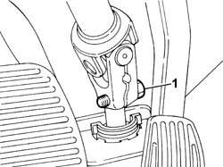
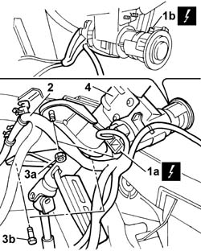

4110A30 Steering control shaft SUPPORT - R.R.
- Path
- Procedures > 41 STEERING > 4110 STEERING CONTROL AND LINKAGE > 4110A steering control > 4110A30 Steering control shaft SUPPORT - R.R.
- Kind
- repair procedure (removal / refitting; the operation number is the code)
- Applies to
- all engines; all production periods
- Interactive page
- https://sloeber94.github.io/elrnDB-fPnd/en/#/2752779
Applies to: all engines; all production periods
 Removing
Removing
 Refitting
RefittingDisconnect the battery negative terminal.
4110A10 steering wheel - r+r for replacement or checks
7040A26 steering column trim - r+r
5550A10 stalk unit assembly - r+r
1. Undo the bolt securing the steering column to the steering box.

Applies to: all engines; all production periods
1. Disconnect electrical connections (1a) and (1b).
 | Name | Connector |
|---|---|---|
1a | Ignition switch | H1A |
| Name | Connector |
|---|---|---|
1a | Ignition switch | H1B |
| Name | Connector |
|---|---|---|
1b | Aerial for Fiat-CODE | P91 |
2. Release the wiring from the fastenings on the instrument panel beam.
3. Undo the nuts (3a) and the rear bolts (3b).
4. Release the steering column from the instrument panel support beam and position on the floor.

Applies to: all engines; all production periods
Refitting
RemovingFit the mount with steering shafts in its seat.
Tighten the bolts and nuts securing the mount with steering control shafts to the instrument facia support beam.
 | Fastening | Component | Ø | Value (daNm) |
|---|---|---|---|---|
- | Bolt | STEERING SHAFT MOUNTING | M8 | 1.5 |
| Fastening | Component | Ø | Value (daNm) |
|---|---|---|---|---|
- | Nut | STEERING SHAFT MOUNTING | M8 | 1.5 |
Tighten the bolt securing the support with steering shafts to the steering box.
| Fastening | Component | Ø | Value (daNm) |
|---|---|---|---|---|
- | Bolt | STEERING SHAFT JOINT FASTENERS | M8 | 3.2 ÷ 4.2 |
Connect the electrical connections for the ignition switch.
| Name | Connector |
|---|---|---|
- | Ignition switch | H1A |
| Name | Connector |
|---|---|---|
- | Ignition switch | H1B |
| Name | Connector |
|---|---|---|
- | Aerial for Fiat-CODE | P91 |
5550A10 stalk unit assembly - r+r
7040A26 steering column trim - r+r
4110A10 steering wheel - r+r for replacement or checks
Connect the battery terminals.
Check the operation of the Air Bag system using the Examiner or other diagnostic equipment.